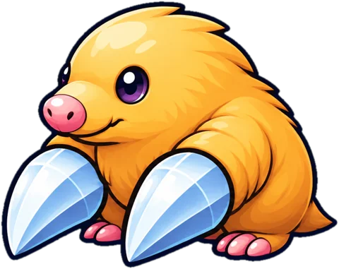

Tap a stage to read its story.
Tuskbun's first form is a round, fluffy, light-brown creature - part mole, part digging machine - with two oversized crystalline diamond-blue tusks erupting from its snout that are already bigger than the creature's head. Its tiny round eyes peer out above the tusks with determined calm, and it holds its stubby forelimbs close to its chest. In the Steel Fortress, young Tusklets bore exploratory shafts through walls, leaving perfectly circular tunnels the diameter of their tusks - which architects quietly use as ventilation.
Field note: A Tuskbit's crystal tusks are harder than most drilling tools used in the Steel Fortress - the garrison tests new chisels against shed tusk-fragments.
Steel Fortress. Tuskbit and its family are found in the Steel Fortress. See everyone who lives there.
Share a Bond Food that matches its types to become friends. Tuskbit loves:
A Bond Food is not a trick. It joins your spirit with the Kimuro's spirit, and only when it chooses you.
Print the Kimuro adventure packs: mazes, cards, a board game and Bond Mark medals.
See the printable packs